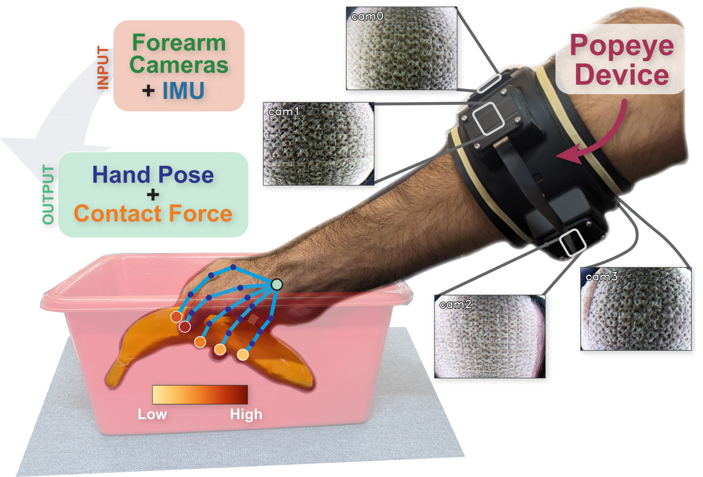
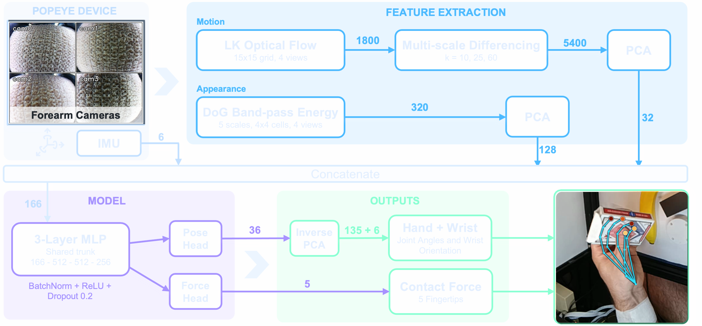
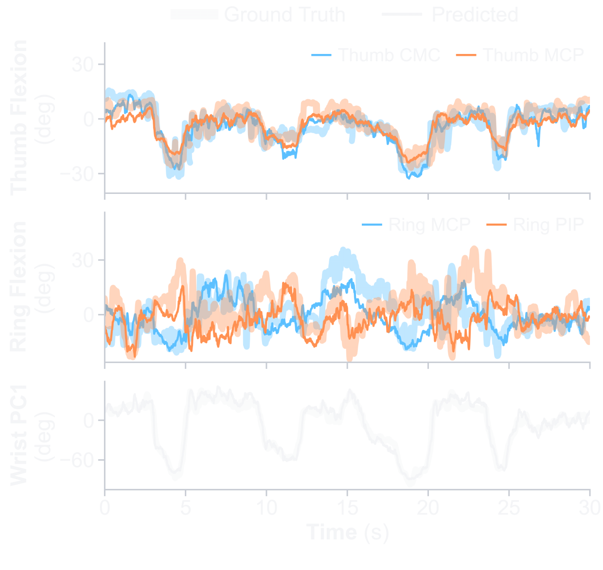
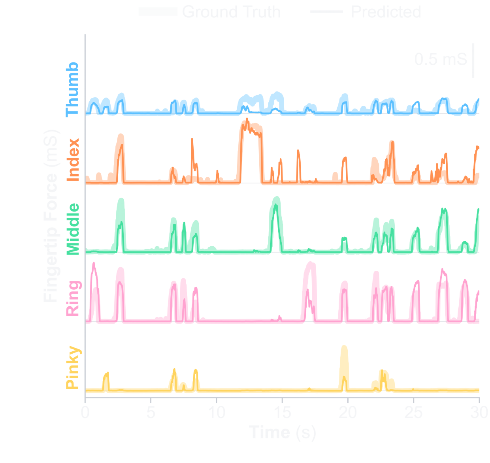

Popeye estimates hand pose and per-fingertip contact force
without:
(1) any external cameras or tracking, or
(2) any equipment on the hand itself
Instead...
Popeye uses cameras to look at the forearm surface wrapped in a textured bandage
Features are extracted from the four camera images with DoG Band-pass + Optical Flow
The forearm camera image features, along with IMU outputs, pass through a 3-layer MLP to predict finger + wrist pose and fingertip contact force.

Popeye was tested across 3 participants and predicts finger pose to 9.27° geodesic error and tracks force magnitude at r = 0.725
Fingertip sensors for ground truth force labels only.
Ground truth fingertip force sensors removed in these sessions as they would be at deployment.
Popeye can be trained with just 3 mins of data per user for wrist and grasp pose + force, and ~25 mins for per-finger outputs.
Predicted and ground-truth hand state on a test segment from Participant 3, with fingertip force in conductance (mS).


Per Finger
Evaluation metrics per finger, averaged over participants.
| Pose error (°) ↓ | Contact AP ↑ | Force r ↑ | |||
|---|---|---|---|---|---|
| Finger | Ours | Const. | Ours | Chance | Ours |
| Thumb | 10.43 | 13.88 | 0.901 | 0.516 | 0.643 |
| Index | 8.62 | 12.16 | 0.723 | 0.238 | 0.690 |
| Middle | 8.79 | 11.92 | 0.866 | 0.388 | 0.707 |
| Ring | 8.31 | 12.04 | 0.839 | 0.244 | 0.763 |
| Pinky | 10.21 | 14.24 | 0.785 | 0.084 | 0.820 |
Input Ablations
Effect of removing each input, averaged over participants.
| Ablated | Dim | Finger (°) ↓ | Wrist (°) ↓ | AP ↑ | r ↑ |
|---|---|---|---|---|---|
| − Appearance | 38 | +1.69 | +5.10 | −0.193 | −0.183 |
| − Motion | 134 | +0.35 | +1.62 | −0.020 | −0.011 |
| − IMU | 160 | +0.33 | +2.82 | −0.010 | −0.009 |